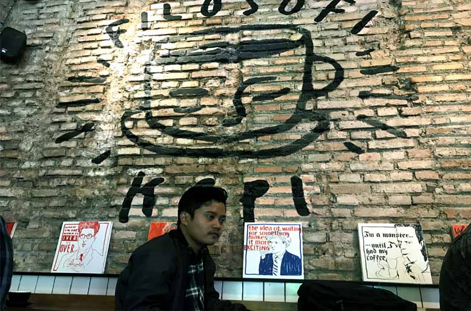
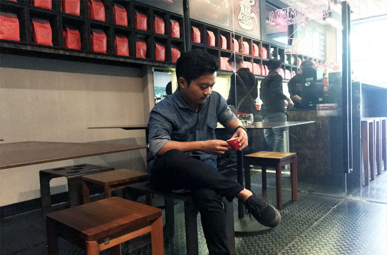
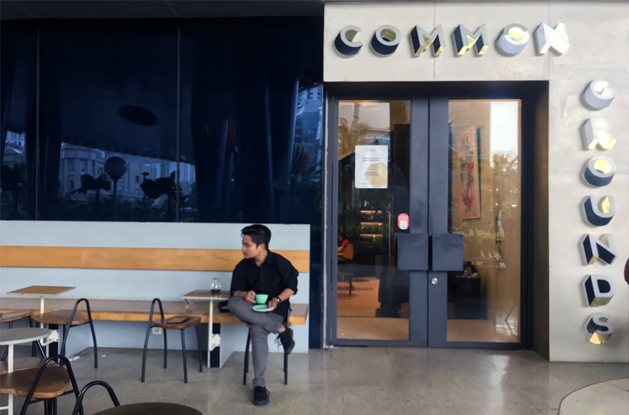
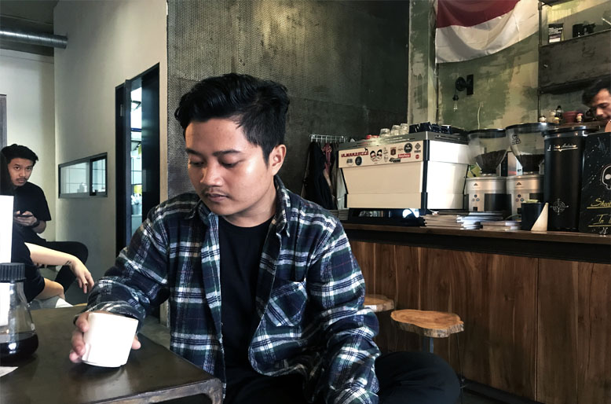

1. Filosofi Kopi
 Lokasi : Filosofi Kopi MelawaiWell, tempat yang menjadi destinasi pertama untuk saya kunjungi adalah filosofi kopi melawai. mungkin karena rasa penasaran dengan rasa Kopi Tiwus, Perfecto dan Lestari yang sudah seperti melegenda di film Filosofi Kopi. sayangnya waktu itu perfecto dan lestari sedang habis, jadi saya hanya bisa mencoba tiwus, saya pesan dengan metode v60. Hasilnya, menurut saya kopi ini acidity nya masih terlalu tinggi (karena saya lebih suka kopi yang low acidity), untuk body mungkin berasa medium dimulut, gak sempat tanya juga sih sama baristanya pakai rasio dan suhu berapa. overall, untuk tiwus gak mengecewakan, tapi sedikit dibawah ekspektasi, karena saya mengharapkan kopi yang seimbang antara acidity dan bitterness.
2. Tanamera Coffee
 Lokasi : Tanamera Coffee ThamrinSaya mendengar banyak sekali rekomendasi dari teman-teman yang pernah berkunjug ketempat ini. Sampai kemaren akhirnya kesampaian juga untuk mengunjungi tempat ini. Riuh dan panasnya jakarta saya tempuh dengan berjalan kaki dari Grand Indonesia. Tanamera Coffee terlihat mencolok dengan ruko berwarna hitam dengan tulisan merahnya, Tak terlalu sulit ditemukan. Tanamera Coffee meroasting kopi mereka sendiri dan inilah yang menjadi nilai plus dari sebuah coffeeshop. Karena menurut saya coffeeshop yang meroasting kopi mereka sendiri pasti menyajikan kopi nikmat Sdan terjaga kesegarannya. Aceh Gayo dengan metode V60 menjadi pilihan siang itu. Dan untuk Hasilnya, fruitnessnya sangat berasa dengan acidity yang tidak terlalu asam. Goodjob Tanamera Coffee.
3. Common Grounds Coffee Roaster
 Lokasi : Common Grounds Neo SohoUntuk Common Grounds sebenarnya niatnya mau mengunjungi outlet yang dicitywalk sudirman. Tapi hari ke 3 dijakarta saya diajak jalan oleh teman ke mall taman anggrek, yang ternyata taman anggrek,centrall park, dan neo soho mall itu berada dalam satu komplek dipodomoro city. Untuk outlet Common Grounds neo soho, tempatnya sangat bersih dan tenang. cocok buat santai atau kerja freelance. Untuk pilihan beans dicommon grounds lebih didomenasi oleh beans luar. Ethiopia Guji Shakiso menjadi pilihan waktu itu. Coba minta seduhkan dengan v60 ternyata di common grounds untuk metode pour-over hanya menggunakan kalita wave. Setelah diseduh dengan kalita wave, sebelum bicara hasilnya saya coba cerita dulu sedikit pengalaman saya pernah coba ethiopia kochere di suatu coffeeshop dibanjarmasin dan acidity, bitternessnya sangat seimbang plus ada sedikit rasa chocolate. untuk hasil seduh ethiopia guji shakiso ini menurut saya rasanya tidak jauh beda dengan beans-beans lokal seperti papua,aceh. agak mengecewakan sih, untuk ukuran beans luar dan dari segi harga beda jauh sama beans lokal tapi dengan rasa yang tidak jauh berbeda. but, karena saya bukan Qgrader jadi anggap saja lidah saya yang salah.
4. SMITH.JKT (Eks. Coffeesmith Jakarta)
 Lokasi : Coffeesmith JakartaFinal Destination of this journey, sebuah coffee roastery dengan banyak piala dan penghargaan dari berbagai event kopi. dan baristanya sekaligus owner dari SMITH Muhammad Aga yang baru memenangkan IBC 2018. Senang sekali akhrinya kesampaian juga mengunjungi tempat ini. pernah dengar tempat ini punya beans andalan dengan nama Java Srikandi, yang lagi-lagi sayangnya waktu itu sedang kosong, maka pilihan jatuh ke aceh gayo yang saat itu tersedia dan juga sebagai pembading dengan aceh gayo yang saya minum di tanamera. dan ternyata hasilnya sangat jauh berbeda, dari segi aroma, dan fruity yang sangat terasa. Bisa dibilang kopi aceh gayo terenak yang pernah saya minum. Overall, Home of champions memang tidak mengecewakan. Best coffeeshop in town!!!.